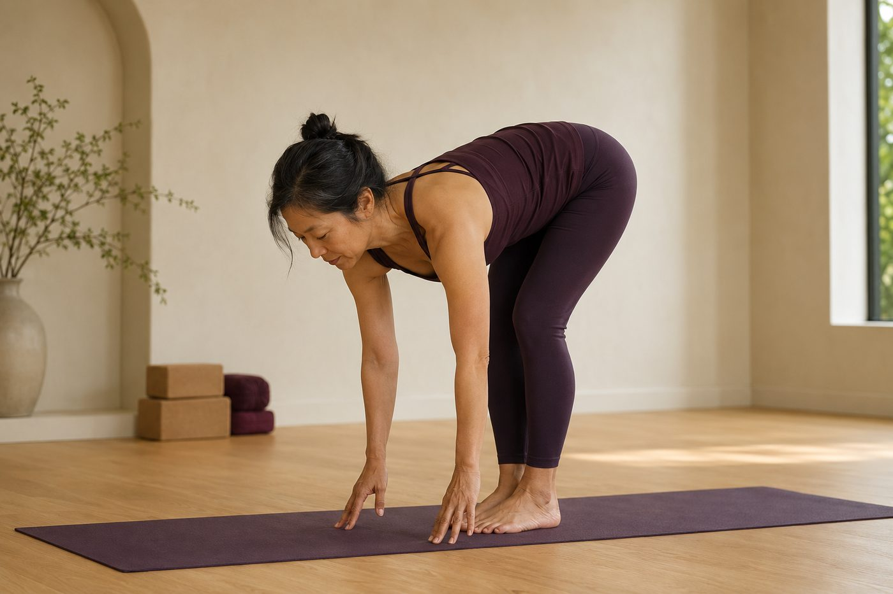

前彎摸不到腳尖，是柔軟度差、還是骨盆卡住？

每次帶到坐姿前彎，總有人偷瞄隔壁——別人手掌整片貼地，自己指尖離腳尖還差一個拳頭，心裡默默替自己貼上「我天生就硬」的標籤。先別急著認命。摸不摸得到腳尖，跟你以為的那個「柔軟度」，其實沒你想的那麼有關係。真正決定你彎得下去的，是另一個常被忽略的地方。
先搞清楚：前彎到底是哪裡在「彎」？
很多人以為前彎就是「把上半身往下折、手去追腳尖」，所以摸不到就代表自己太硬。但如果把一個漂亮的前彎放慢拆解，你會發現真正在動的主角不是腰，而是髖關節。
前彎的本質，是骨盆繞著大腿骨（股骨頭）往前轉——像一個裝滿水的碗，從正立慢慢往前傾倒。轉動的軸心在髖關節這個深深的球窩，不在你的下背。當骨盆能順順地往前傾，上半身自然就跟著沉下去，手離腳尖的距離也會跟著縮短。
所以第一個該問的問題，不是「我的腿後有多緊」，而是：我的骨盆，轉得動嗎？
真正卡住你的，常是「骨盆前傾不了」
那骨盆為什麼轉不動？關鍵常在後側那條大家又愛又恨的膕旁肌（大腿後側，俗稱腿後肌）。
膕旁肌的上端，正好接在骨盆最底部的坐骨上。當它又緊又短，就像兩條被拉緊的繩子，從下面把坐骨往膝蓋方向拽住。骨盆想往前傾、坐骨想往上翹，卻被死死拉住——結果就是骨盆前傾的角度被鎖住了。這時候不管你手怎麼往下搆，能動的範圍就只有那麼多。
除了膕旁肌，還有幾個常被忽略的幫兇：
- 久坐讓髖太緊——長期坐著，髖關節卡在同一個角度太久，前側的髂腰肌縮短、後側的臀大肌變得不太出力，骨盆的活動度自然變差。
- 臀部不幫忙——前彎後要往回站起、或穩定骨盆時，臀大肌本該參與；它「睡著」了，骨盆就更難被好好帶動。
- 從沒學過怎麼轉骨盆——很多人一輩子前彎都靠彎腰，身體根本沒建立「從髖摺下去」的動作記憶。
摸不到腳尖，多半不是「腿後不夠長」，而是「骨盆前傾不了」——被緊的膕旁肌從坐骨往下拉住了。
你以為在拉腿後，其實是「從腰折下去」代償
這裡有個關鍵的迷思要破。當骨盆前傾被卡住、你又硬要把手往地板送，身體會自動找最省事的那條路：從腰椎折下去。也就是骨盆不動，改成讓下背拱成一個大彎——腰椎過度屈曲。表面上你好像「彎得更低」了，但那一段其實是跟脊椎「借」來的。
問題在於，這樣折的時候，下背的豎脊肌、多裂肌被拉到極限，椎間盤前側承受的壓力也跟著變大。這也是為什麼有些人前彎摸得到地，起身卻覺得下背緊緊、痠痠的——他們不是髖比較開，是拿脊椎換了活動幅度。
所以真相是這樣：手能不能碰到地，跟你的髖有多開，根本是兩回事。一個骨盆前傾很漂亮、但只停在小腿的人，往往比一個死命拱腰摸地的人，做得更安全、也更貼近前彎真正的本意。摸不到，不代表你硬；摸得到，也不代表你做對。
與其把手往下搆，不如教骨盆學會前傾
方向對了，練起來就完全不一樣。真正該練的，不是「手更靠近腳」，而是「骨盆能不能往前轉一點」。
給你一個很好用的畫面：前彎往下時，想像坐骨往天花板方向翹、肚子往大腿貼、背維持長長的，而不是頭往下栽。膝蓋可以微彎沒關係——微彎能先把膕旁肌的張力放掉一些，讓骨盆更容易前傾，你反而更找得到「從髖摺下去」的感覺。這正是前彎先「摺髖」，不是先彎腰的核心。
這也是壁繩很能幫上忙的地方。做前彎相關的伸展時，繩子可以先接住你上半身的一部分重量，讓你不必靠彎腰硬撐，就能安心地把骨盆往前帶、把背維持長。支撐讓你能停在「骨盆前傾」這個對的位置久一點，身體才有機會慢慢把它記住。至於腿後那條緊繃的膕旁肌，也不是靠拚命拉就會鬆——這點可以看腿後總是很緊，一直拉就會鬆嗎？。
先看清楚：你卡的是腿後、是髖，還是骨盆
AI 體態檢測（現場做）能幫你看出骨盆的前後傾角度與髖的狀況，老師再依你真正卡住的地方，安排適合的前彎練法，不用再盲拉。
預約首次 NT$199 AI 體態檢測今天可以先記住的一件事
下次前彎摸不到腳尖，先別急著怪自己太硬。把注意力從「手離腳多遠」，換成「我的骨盆有沒有往前轉、背有沒有維持長」。膝蓋微彎、坐骨上翹、肚子找大腿，這幾個小提醒，往往比硬把手往下壓有用得多。
骨盆的活動度和髖的空間，是靠規律、溫和的練習慢慢養出來的，不會今天想通、明天就到位。給身體一點時間，方向對了，指尖離腳尖的距離，自然會一週一週地縮短。
本頁為體態與姿勢的一般衛教與練習分享，非醫療診斷或治療。若有疼痛、舊傷或特殊病史，請先諮詢合格醫療專業人員。